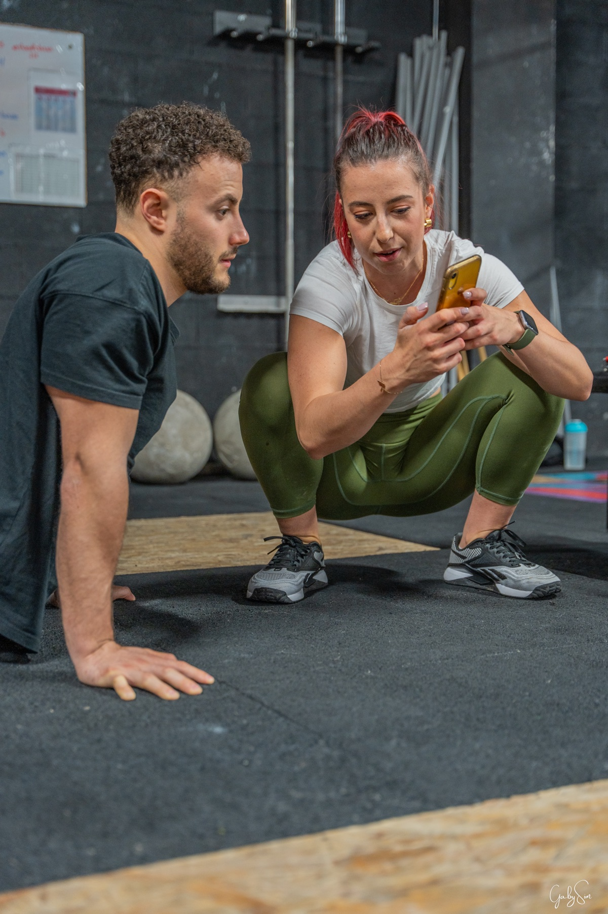
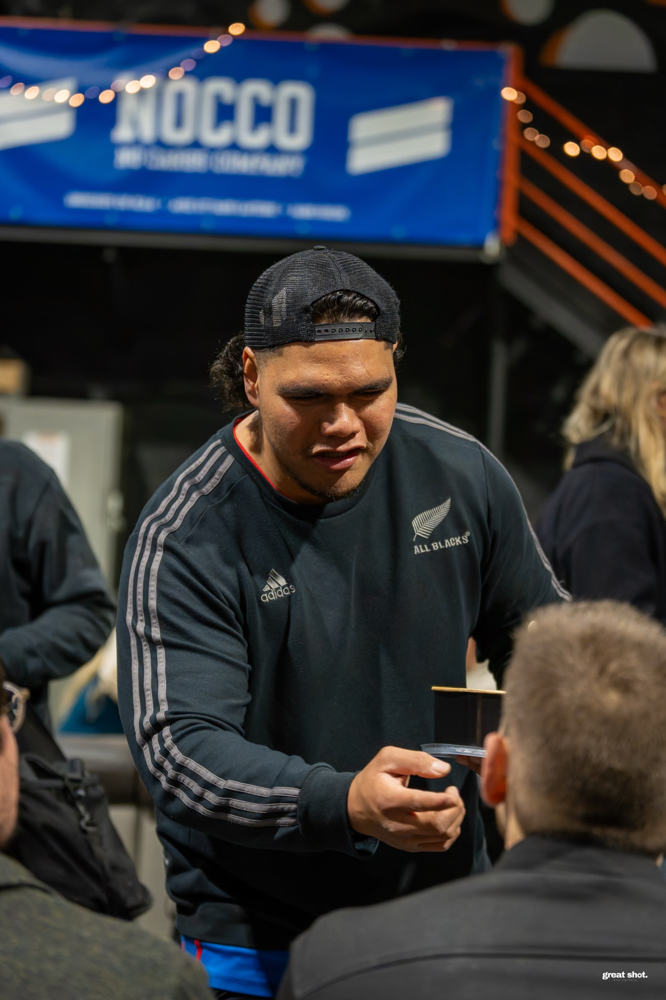
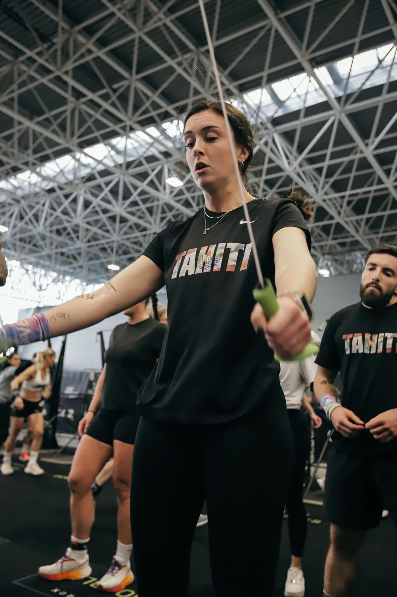
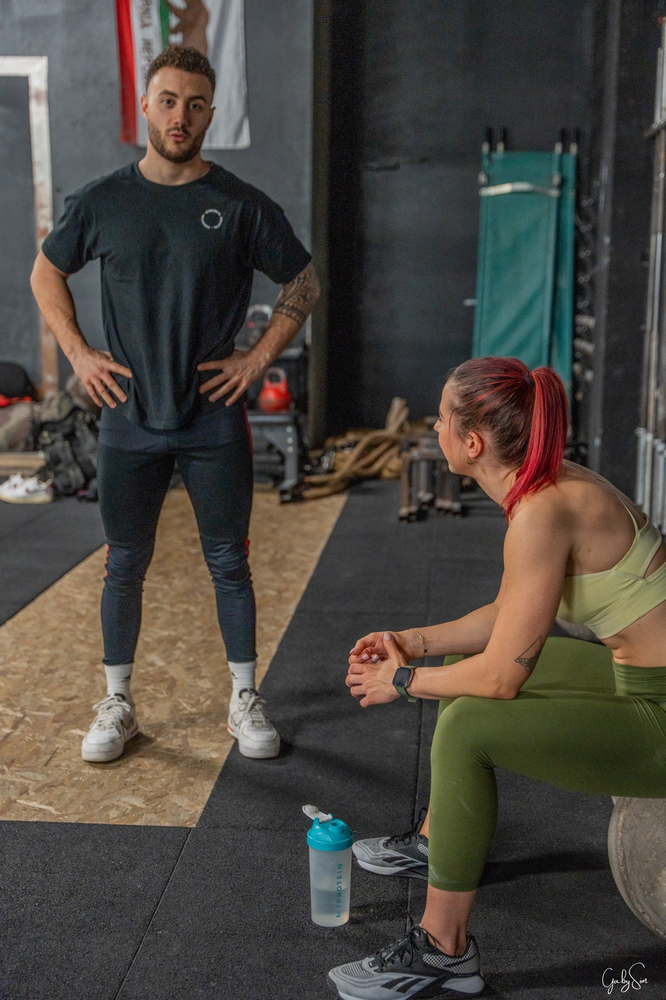
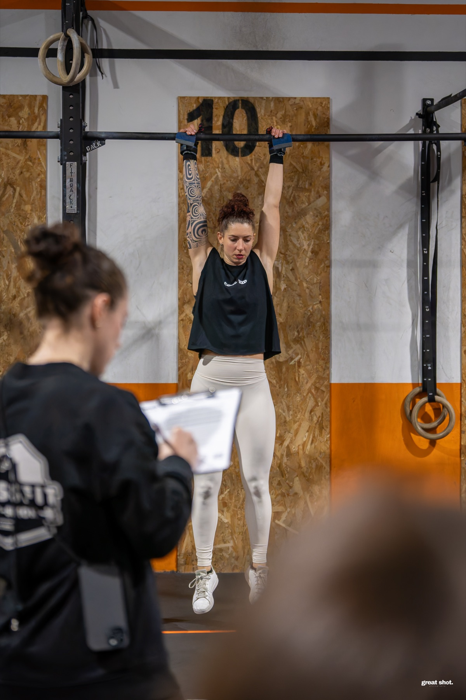
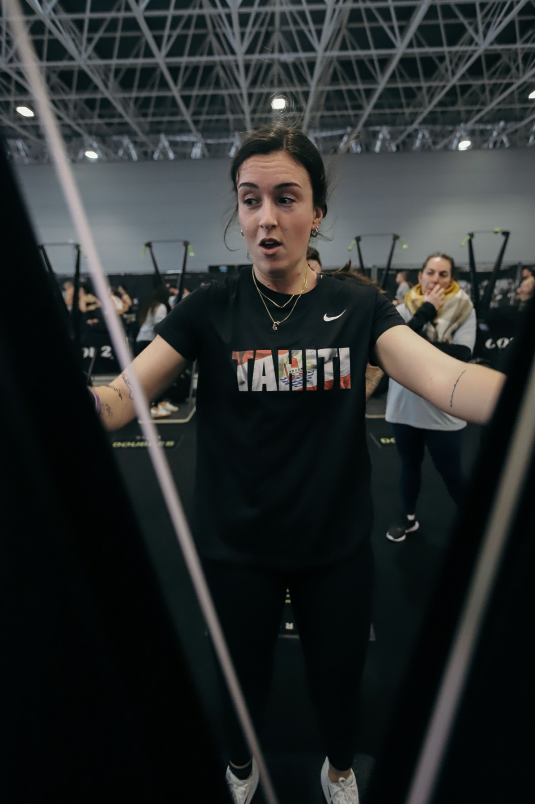
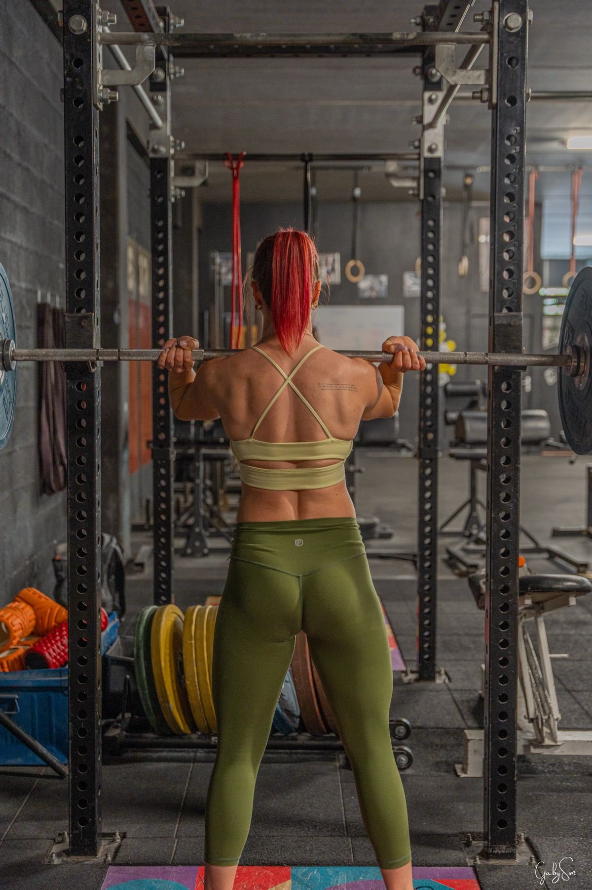
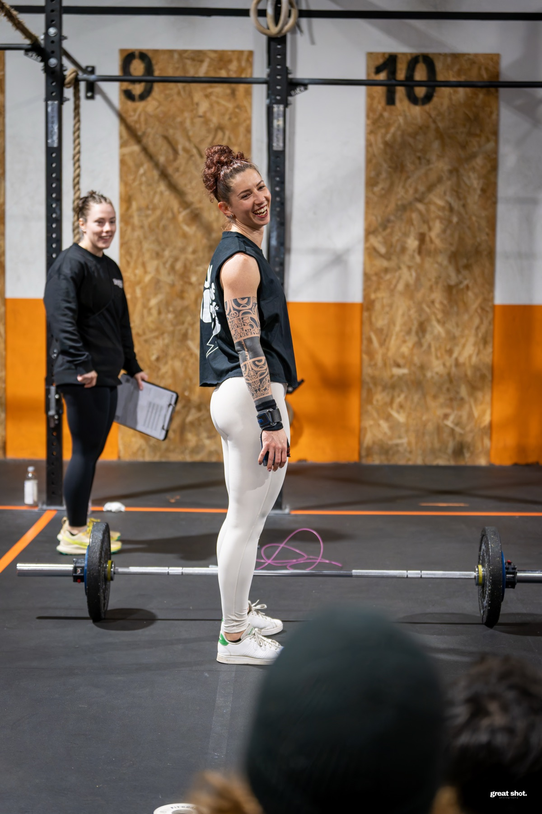
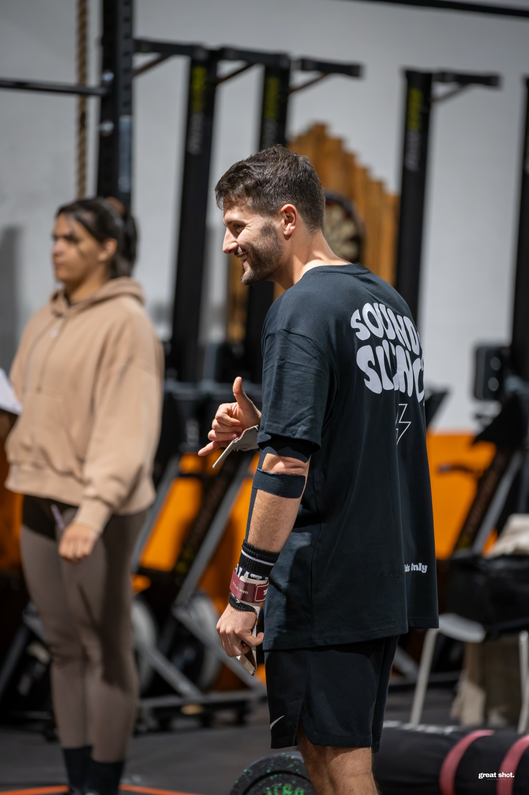

CrossFit, Hyrox, compétitions et boxes toulousaines. Athlète moi-même, je sais où poser l'appareil, quand déclencher, et ce que ça pèse dans les jambes.










Compétition, session box, portrait athlète, contenu réseau. Devis clair, réponse rapide.
Parler d'un projet sport